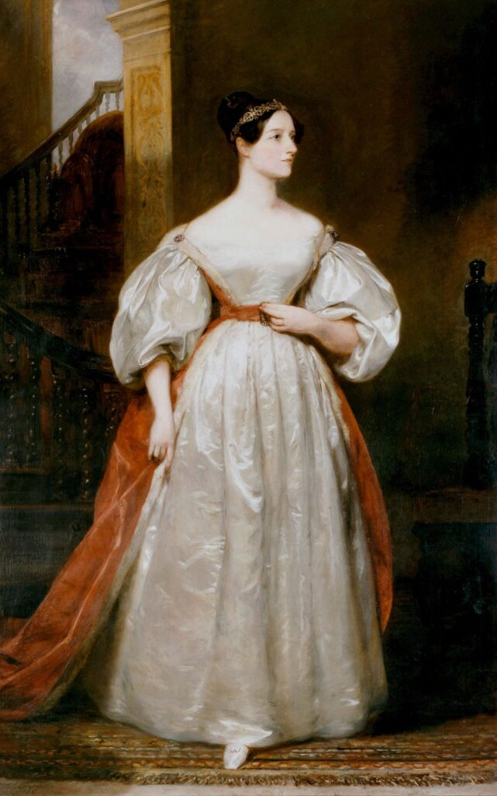

Quem foi Ada Lovelace?
Augusta Ada King, Condessa de Lovelace (1815–1852), foi uma matemática e escritora inglesa. Filha do famoso poeta Lord Byron e da matemática Lady Byron, Ada demonstrou um talento extraordinário para números e lógica desde a infância.
Ela é mundialmente reconhecida como a primeira programadora da história, por ter criado o primeiro algoritmo destinado a ser processado por uma máquina.
"A Máquina Analítica tece padrões algébricos, da mesma forma que o tear de Jacquard tece flores e folhas."
Principais Contribuições
- O Primeiro Algoritmo (1843): Ao traduzir um artigo sobre a Máquina Analítica de Charles Babbage, Ada adicionou notas detalhadas. Uma dessas notas (a Nota G) continha o algoritmo para calcular os Números de Bernoulli.
- Visão Computacional Profética: Ada percebeu que computadores poderiam manipular mais do que apenas números. Ela previu que máquinas poderiam compor músicas, criar artes e processar símbolos.
- Pioneira na Ciência da Computação: Sua abordagem "poética" para a ciência unia imaginação e rigor matemático, antecipando conceitos modernos em mais de um século.
Legado
O legado de Ada continua vivo até hoje na cultura de tecnologia e inovação:
- Linguagem de Programação ADA: Criada pelo Departamento de Defesa dos EUA nos anos 1970 em sua homenagem.
- Ada Lovelace Day: Celebrado anualmente em outubro para destacar as conquistas de mulheres nas áreas de Ciência, Tecnologia, Engenharia e Matemática (STEM).
